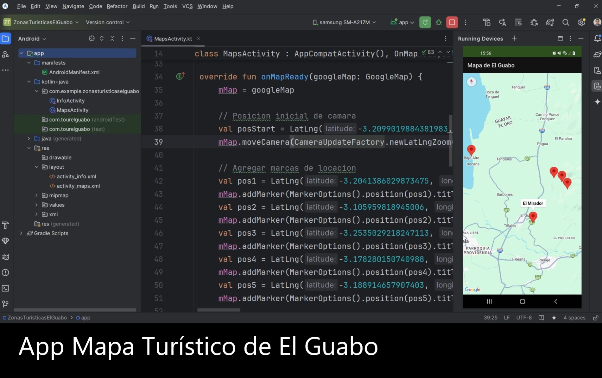
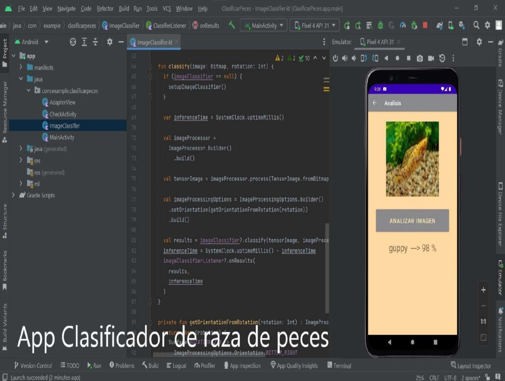
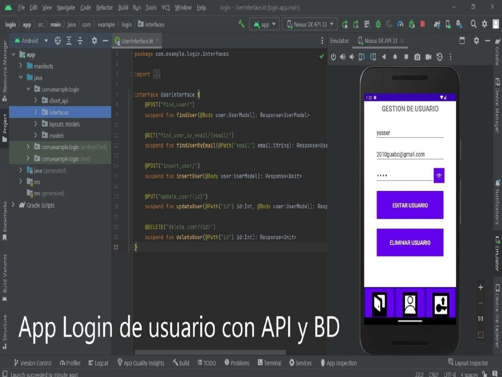

Mapa turístico de El Guabo
- Patrón de diseño arquitectónico: MVC
- Descripción: Esta app permite navegar por los principales centros turísticos de El Guabo, utilizando la API de Google Maps, en el mapa se indican las ubicaciones y si se da un clic sobre alguna de ellas se muestra el nombre del lugar y si se da doble clic se abre una nueva ventana con una imagen y descripción del lugar.

Clasificador de raza de peces
- Patrón de diseño arquitectónico: MVC
- IA: Red neuronal con Keras y TensorFlow
- Descripción: Esta app permite analizar una imagen de tres tipos comunes de peces pequeños de acuario obtenida desde la cámara del dispositivo o la galería de fotos, con el fin de determinar la probabilidad de que sea un pez: Guppy, Betta o Molly, según su forma y color.

Calculadora de materiales
- Patrón de diseño arquitectónico: MVC
- Descripción: Esta app permite calcular el número de ladrillos necesarios para construir una pared y el número de baldosas necesarias para instalarlas en el piso, si se está en la opción pared se solicita ingresar sus dimensiones (alto y largo), así como el tipo de ladrillo o bloque a usar, si se está en la opción baldosas del piso se solicita ingresar los metros cuadrados del piso y de las baldosas, así como el número de baldosas por caja.

Login de usuario
- Patrón de diseño arquitectónico: MVC
- Base de datos: MySQL
- API: Node
- Soporta: HTTP
- Descripción: Esta app es un prototipo de login, que cuenta con las funciones básicas: Crear usuario, Editar usuario, Eliminar usuario, Buscar usuario, Buscar usuario por email (Recuperar clave).